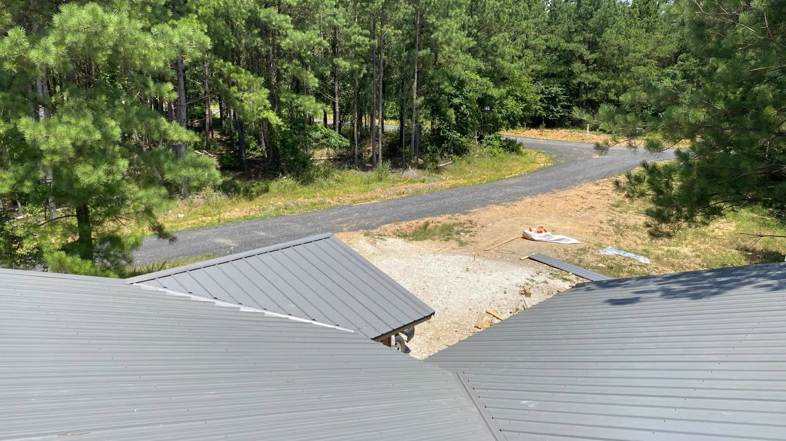

CALL A LIVE PERSON NOW
(479) 652-1424
Request Service

Phone:
(479) 652-1424 (Brandon)
Hours:
8:00 AM - 8:00 PM (Monday - Sunday)
24-Hour Emergency Service Available
Ramos Roofing Plus is fully licensed, bonded, and registered with the Oklahoma Construction Industries Board. Since 2000, we have helped Oklahoma homeowners and business owners protect their properties with premium roofing systems.
We specialize in residential shingle roofing, standing seam metal systems, commercial TPO roofing, and custom siding installations. We have built a solid reputation in eastern Oklahoma for reliability and excellent craftsmanship.
With 6+ crews active in the area, we dispatch directly from our Fort Smith hub, allowing us to reach Oklahoma border communities like Roland and Pocola within 15 minutes of an emergency leak or storm dispatch.
Local answers to your roofing questions in Oklahoma.
Yes, we are fully registered and active throughout Eastern Oklahoma. Our primary service areas include Poteau, Sallisaw, Pocola, Roland, Spiro, Muldrow, Howe, and Heavener. Being based on the border in Fort Smith allows us to easily dispatch our crews and materials to support residential and commercial projects in Le Flore and Sequoyah counties.
We are registered with the Oklahoma Construction Industries Board and hold a valid Oklahoma Roofing Contractor License (OK License # 800052). We carry comprehensive general liability insurance, property damage insurance, and full workers' compensation coverage, protecting Oklahoma property owners from liability and ensuring compliance with state regulations.
Eastern Oklahoma is prone to severe windstorms, microbursts, and spring tornadoes. Standard shingles can lift and tear off when exposed to high winds. To prevent this, we recommend upgrading to shingles with advanced wind-resistant technology, such as the TAMKO Titan XT line. These shingles feature a reinforced nail zone that withstands wind gusts up to 160 MPH, preventing blow-offs.
Yes, we provide free roof inspections and digital damage assessments for all property owners in Sallisaw, Poteau, and surrounding Eastern Oklahoma areas. If your home has been hit by hail or high winds, our inspector will assess the shingles, flashing, valleys, and gutters, and provide a detailed report with photos and a repair estimate.
If your roof has suffered sudden storm damage (such as hail fractures or wind tear-offs), it is typically covered under standard homeowner's insurance policies. We help Oklahoma clients compile photographic proof and itemized estimates for their adjusters. We also meet the insurance adjuster on-site to ensure all storm damage is documented.
For agricultural structures, barns, and metal outbuildings in Eastern Oklahoma, exposed-fastener metal roofing panels (screw-down rib panels) are popular. They are highly durable, cost-effective, shed water and snow efficiently, and require minimal maintenance. For residential properties, we recommend standing seam metal roofs with hidden fasteners to prevent leaks.
Most standard residential roof replacements in Pocola and Roland are completed in just 1 to 2 days. Our crews manage the entire tear-off, roof decking repairs, synthetic underlayment installation, shingle application, and clean-up. We perform magnetic sweeps of your yard and driveway to ensure no stray nails are left behind.
Yes, we provide professional commercial flat roofing services in Eastern Oklahoma. We specialize in single-ply TPO membrane installations, modified bitumen systems, and commercial metal roof repairs. Whether you own a commercial space in Sallisaw or an office building in Poteau, we provide flat roof maintenance, leak tracing, and full TPO replacements.
Eastern Oklahoma can experience freezing rain and heavy winter snow. To prevent ice damming and subsequent leaks along the eaves, we install self-adhering ice and water shield membranes under the shingles along all eaves, valleys, and around roof penetrations. This membrane forms a waterproof seal that blocks trapped water from seeping into your home.
You can request a free estimate by calling us directly at (479) 652-1424, or by submitting a request through our online contact form. Our border dispatch team will coordinate with you to schedule a convenient time for an inspector to visit your property and provide a detailed, competitive quote.
Know someone in Fort Smith, NWA, or Eastern Oklahoma who needs a new roof or siding? Refer them to Ramos Roofing. Once their roof replacement is completed, we'll write you a check!